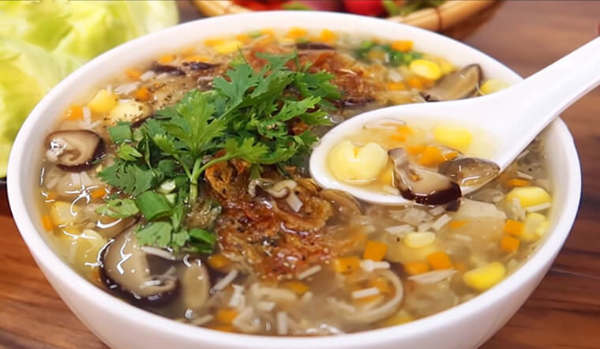
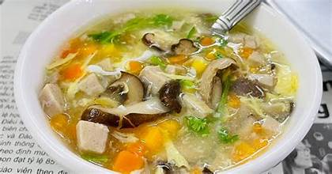
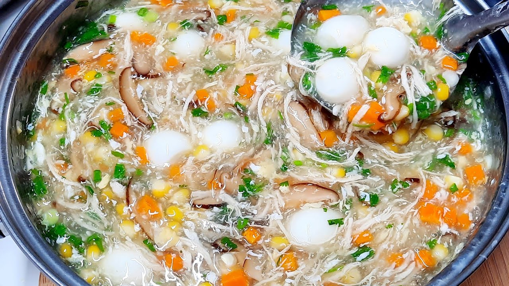

Súp Gà Nấm là món khai vị hoặc món ăn nhẹ bổ dưỡng, thơm ngon và dễ làm,
được yêu thích bởi hương vị ngọt thanh tự nhiên từ thịt gà và nấm, cùng
độ sánh mịn vừa phải. Món súp này không chỉ làm ấm bụng mà còn cung cấp
nhiều dưỡng chất, phù hợp cho mọi lứa tuổi, đặc biệt là người ốm hoặc
trẻ nhỏ.



Nguyên liệu
Ức gà: 200g (hoặc đùi gà, có xương để nấu nước dùng
ngọt hơn).
Nấm: 100g nấm hương tươi hoặc nấm rơm (hoặc nấm đông
cô khô 30g). (Nếu dùng nấm khô, cần ngâm nở và rửa sạch).
Hành tím: 1 củ nhỏ, bóc vỏ, băm nhỏ.
Nước luộc gà: 1 lít (có thể dùng nước lọc hoặc nước
dùng xương gà/heo mua sẵn).
Bột năng (hoặc bột bắp): 2 muỗng canh (hòa với 3-4
muỗng canh nước lọc để tạo độ sánh).
Nước mắm: 1 muỗng cà phê (tùy chọn, để tăng độ đậm đà).
Hạt nêm: 1/2 muỗng cà phê (tùy chọn).
Ngò rí (rau mùi): Một ít, thái nhỏ để trang trí.
Hành lá: Một ít, thái nhỏ để trang trí.
Dầu ăn: 1 muỗng cà phê.
Cách làm
Bước 1: Sơ chế nguyên liệu
Luộc gà: Rửa sạch ức gà. Cho gà vào nồi, đổ nước
xâm xấp, thêm chút muối và luộc chín. Khi gà chín, vớt ra để
nguội, xé thành sợi nhỏ vừa ăn. Giữ lại phần nước luộc gà làm nước
dùng súp.
Sơ chế nấm: Nếu dùng nấm hương khô, ngâm nấm
trong nước ấm khoảng 15-20 phút cho nở mềm, rửa sạch, cắt bỏ gốc
cứng, thái lát hoặc thái sợi. Nếu dùng nấm tươi, rửa sạch, thái
lát.
Hành tím: Bóc vỏ, băm nhỏ.
Bột năng: Hòa tan 2 muỗng canh bột năng với 3-4
muỗng canh nước lọc trong một bát nhỏ.
Hành ngò, hành lá: Rửa sạch, thái nhỏ.
Bước 2: Nấu súp
Đặt nồi lên bếp, cho 1 muỗng cà phê dầu ăn vào đun nóng.
Cho hành tím băm vào phi thơm cho đến khi vàng nhẹ.
Cho nấm đã sơ chế vào nồi, xào nhanh khoảng 2-3 phút cho nấm săn
lại và dậy mùi thơm.
Đổ 1 lít nước luộc gà (hoặc nước dùng khác) vào nồi. Đun sôi.
Khi nước sôi, nêm nếm súp với muối, tiêu xay, nước mắm (nếu dùng)
và hạt nêm (nếu dùng) cho vừa khẩu vị.
Cho thịt gà đã xé sợi vào nồi, khuấy đều.
Bước 3: Tạo độ sánh và hoàn thiện
Khi súp đang sôi nhẹ, từ từ đổ chén bột năng đã hòa tan vào nồi,
vừa đổ vừa khuấy đều liên tục theo một chiều để súp không bị vón
cục và đạt độ sánh mong muốn.
Đun thêm khoảng 1-2 phút cho súp sôi nhẹ trở lại và bột năng chín,
súp trong.
Tắt bếp.
Bước 4: Trình bày và thưởng thức
Múc súp gà nấm ra bát.
Rắc hành ngò và hành lá thái nhỏ lên trên để trang trí.
Có thể thêm một chút tiêu xay nữa nếu thích.
Dùng súp gà nấm ngay khi còn nóng.
Mẹo nhỏ để Súp Gà Nấm ngon hơn:
Nước dùng: Nước luộc gà là yếu tố quan trọng tạo
nên vị ngọt tự nhiên cho súp. Nếu luộc gà cả con, bạn có thể thêm
một củ hành tây nướng, vài lát gừng để nước dùng thơm hơn.
Chọn nấm: Bạn có thể kết hợp nhiều loại nấm khác
nhau như nấm kim châm, nấm đùi gà để tăng thêm hương vị và kết cấu
cho súp.
Tạo độ sánh:
Hòa bột năng/bột bắp với nước lạnh trước khi cho vào nồi để
tránh bị vón cục.
Đổ từ từ và khuấy liên tục khi cho bột năng vào để kiểm soát độ
sánh của súp.
Gia vị: Nêm nếm gia vị vừa phải để tôn lên vị ngọt
tự nhiên của gà và nấm.
Thêm topping: Bạn có thể thêm một ít trứng cút
luộc, hạt bắp Mỹ, hoặc cà rốt thái hạt lựu vào súp để tăng thêm dinh
dưỡng và màu sắc.
Bình luận và Đánh giá
Đánh giá của bạn
Chưa có bình luận nào.